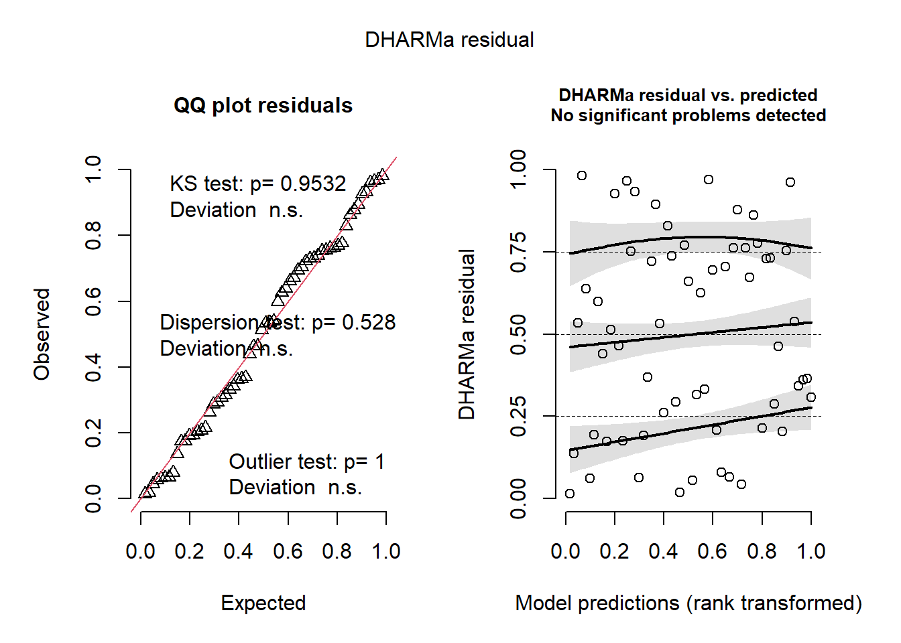
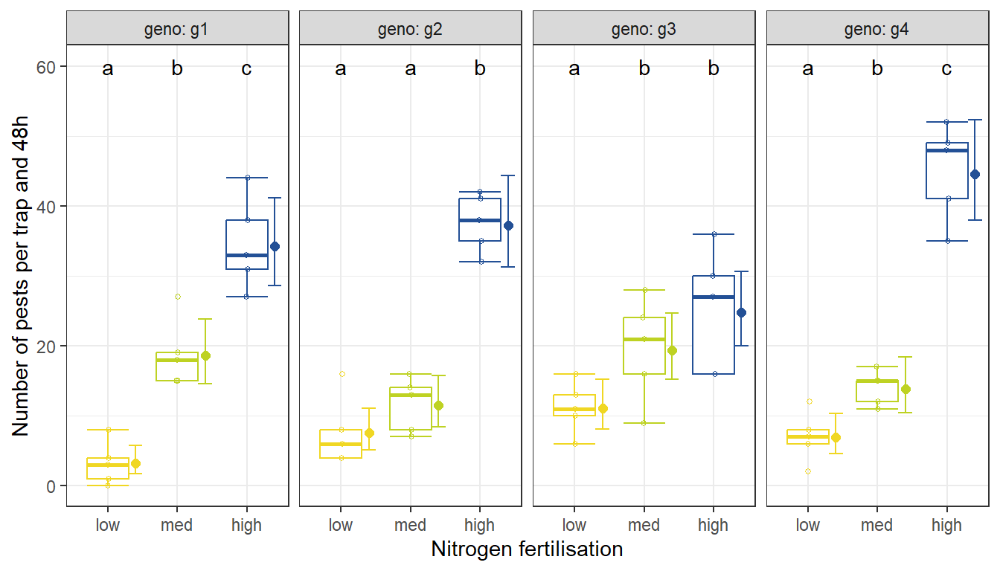
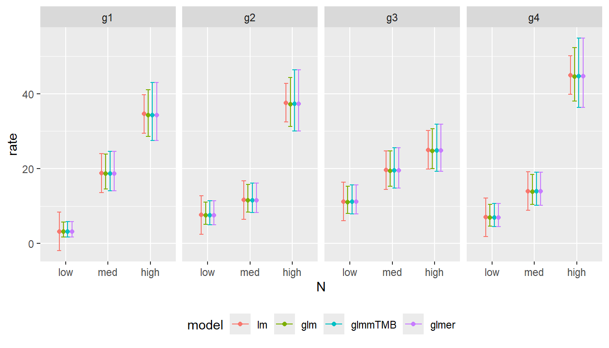
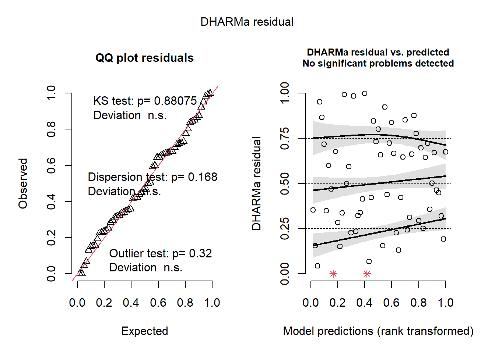

library(ggplot2)# plotting
library(dplyr)# data management and summary statistics
library(ggpubr)# plotting
library(openxlsx)# import and export Excel files
library(forcats)# factor repordering
library(DHARMa) # model diagnostics
library(emmeans) # posthoc tests
library(multcomp) # cld
library(multcompView) #cld
library(glmmTMB) # mixed model
library(car) # anova for glmmTMB
library(lme4) # lmer and glmer mixed model
library(lmerTest) # test lmer
library(conflicted)
conflicts_prefer(lmerTest::lmer)
# Suppress summarise info
options(dplyr.summarise.inform = FALSE)Analysis of two-factorial experiments with generalised linear (mixed effect) models
We use the same data file as before. data_YSM.xlsx But let’s assume we have measured the number of pests per trap in the experimental plots.
Import data and convert geno and N to factors, levels of N should not be in alphabetical order
df<-read.xlsx("data_YSM.xlsx")
str(df)'data.frame': 60 obs. of 7 variables:
$ rep : num 1 2 3 4 5 1 2 3 4 5 ...
$ geno : chr "g1" "g1" "g1" "g1" ...
$ N : chr "low" "low" "low" "low" ...
$ yield : num 55.9 63 69.5 59.6 64.4 ...
$ pests : num 3 0 8 1 4 8 4 6 4 16 ...
$ pests.A: num 82 91 86 58 45 111 85 107 82 86 ...
$ pests.B: num 82 91 86 58 45 111 85 107 82 86 ...df <- df %>%
mutate(across(c(geno, N), ~ as.factor(.x)),
N=fct_relevel(N, "low", "med", "high"),
block=as.factor(rep))
str(df)'data.frame': 60 obs. of 8 variables:
$ rep : num 1 2 3 4 5 1 2 3 4 5 ...
$ geno : Factor w/ 4 levels "g1","g2","g3",..: 1 1 1 1 1 2 2 2 2 2 ...
$ N : Factor w/ 3 levels "low","med","high": 1 1 1 1 1 1 1 1 1 1 ...
$ yield : num 55.9 63 69.5 59.6 64.4 ...
$ pests : num 3 0 8 1 4 8 4 6 4 16 ...
$ pests.A: num 82 91 86 58 45 111 85 107 82 86 ...
$ pests.B: num 82 91 86 58 45 111 85 107 82 86 ...
$ block : Factor w/ 5 levels "1","2","3","4",..: 1 2 3 4 5 1 2 3 4 5 ...ggplot(df, aes(y=pests, x=geno, col=N)) +
stat_boxplot(geom ="errorbar", width = 0.6)+
geom_boxplot(outlier.shape=NA, width = 0.6) +
geom_jitter(position=position_jitterdodge(jitter.width = 0.1, jitter.height = 0,
dodge.width=0.6), shape=1, size=1)And we fit a linear model
model <- lm(pests ~ geno * N + block, data = df)
summary(model)
Call:
lm(formula = pests ~ geno * N + block, data = df)
Residuals:
Min 1Q Median 3Q Max
-8.3167 -2.6500 0.4167 2.1625 8.8833
Coefficients:
Estimate Std. Error t value Pr(>|t|)
(Intercept) 2.5167 2.4031 1.047 0.300694
genog2 4.4000 2.9431 1.495 0.142053
genog3 8.0000 2.9431 2.718 0.009355 **
genog4 3.8000 2.9431 1.291 0.203399
Nmed 15.6000 2.9431 5.300 3.55e-06 ***
Nhigh 31.4000 2.9431 10.669 8.74e-14 ***
block2 -3.0833 1.8998 -1.623 0.111737
block3 3.0833 1.8998 1.623 0.111737
block4 -0.9167 1.8998 -0.483 0.631837
block5 4.3333 1.8998 2.281 0.027448 *
genog2:Nmed -11.6000 4.1622 -2.787 0.007825 **
genog3:Nmed -7.2000 4.1622 -1.730 0.090669 .
genog4:Nmed -8.6000 4.1622 -2.066 0.044728 *
genog2:Nhigh -1.4000 4.1622 -0.336 0.738200
genog3:Nhigh -17.6000 4.1622 -4.228 0.000117 ***
genog4:Nhigh 6.6000 4.1622 1.586 0.119973
---
Signif. codes: 0 '***' 0.001 '**' 0.01 '*' 0.05 '.' 0.1 ' ' 1
Residual standard error: 4.654 on 44 degrees of freedom
Multiple R-squared: 0.9149, Adjusted R-squared: 0.8859
F-statistic: 31.54 on 15 and 44 DF, p-value: < 2.2e-16library(DHARMa)
simulationOutput <- simulateResiduals(fittedModel = model, plot = F)
plot(simulationOutput)plotResiduals(simulationOutput, form = df$geno)plotResiduals(simulationOutput, form = df$N)We observe that variance in residuals increases with increasing nitrogen fertilisation. Hence the assumption on variance homogeneity is not met.
plotResiduals(simulationOutput, form = df$block)emmeans(model, ~geno*N) geno N emmean SE df lower.CL upper.CL
g1 low 3.2 2.08 44 -0.994 7.39
g2 low 7.6 2.08 44 3.406 11.79
g3 low 11.2 2.08 44 7.006 15.39
g4 low 7.0 2.08 44 2.806 11.19
g1 med 18.8 2.08 44 14.606 22.99
g2 med 11.6 2.08 44 7.406 15.79
g3 med 19.6 2.08 44 15.406 23.79
g4 med 14.0 2.08 44 9.806 18.19
g1 high 34.6 2.08 44 30.406 38.79
g2 high 37.6 2.08 44 33.406 41.79
g3 high 25.0 2.08 44 20.806 29.19
g4 high 45.0 2.08 44 40.806 49.19
Results are averaged over the levels of: block
Confidence level used: 0.95 CIs=cld(emmeans(model, ~N|geno), method="pairwise", adjust="sidak", Letters=letters)
CIs$.group =gsub(" ", "", CIs$.group, fixed = TRUE)Negative confidence interval. But we cannot measure -1 pests per trap.
ggplot(df, aes(y=pests, x=N, col=N)) +
stat_boxplot(geom ="errorbar", width = 0.6)+
geom_boxplot(outlier.shape=NA, width = 0.6) +
geom_jitter(position=position_jitterdodge(jitter.width = 0.1, jitter.height = 0,
dodge.width=0.6), shape=1, size=1)+
geom_point(data=CIs, aes(y=emmean),
shape=16, size=2,
position = position_nudge(x = 0.4))+
geom_errorbar(data=CIs, aes(y=emmean, ymin=lower.CL, ymax=upper.CL),
width=0.2, position = position_nudge(x = 0.4))+
geom_text(data=CIs, aes(y = 60, label =.group), col=1)+
scale_color_manual(values=c(rgb(240,215,35, max = 255),
rgb(190,210,35, max = 255),
rgb(35,80,150, max = 255) ),
limits = c("low","med", "high"))+
facet_grid(~geno, scales="free", labeller = labeller(geno=label_both))+
theme_bw() +
theme(legend.position = "none")+
ylab("Number of pests per trap and 48h")+
xlab("Nitrogen fertilisation")Do you think that these confidence interval match the observed data?
Sometimes we run into problems with applying linear models to data:
- no homogeneous variances
- no approximate normal distribution of residuals
- unrealistic predicted values or confidence intervals
- e.g. negative values in count data (-2 aphids)
- proportions above 100% (101% mortality)
- curvature in residuals
Sometimes a transformation of the response helps:
- for count data: log(y) or sqrt(y) or log(y+k)
- for proportions logit(y): log(p/(1-p))
But using a generalized linear model (GLM) might be a better option.
A generalized linear model (GLM) is an extension of the general linear model that allows for the response variable to have a different distribution other than the normal distribution. It enables the modeling of various types of data, such as binary, count, and proportion data, by using a link function that transforms the linear combination of predictors into a suitable scale for the response variable.
Important
Please note that also for linear models, the assumption of the approximate normal distribution of the response is not related to your y with treatment effects, but for y at any given mean. And we check this assumption by looking at the residuals (where the treatment effect is removed).
Typical distributions for GLMs
- Poisson: for count data
- Negative binomal: for clustered count data (not strictly exponential family but used in the GLM framework)
- Binomial: for binary or proportion data
- Gamma: for positive, continuous data

The distributions can have different shapes.

Link function
The link function relates the mean of the response variable to the linear predictor. This function is what allows GLMs to accommodate non-normal data. Common link functions include the log function for count data (Poisson GLM, negative binomial) and strictly positive data (Gamma GLM) and the logit, probit and cloglog function for binary or proportion data (binomial GLM) and the inverse link for Gamma GLM.
Generalized linear model for count data
We use the function glm and specify the distribution with the family-argument poisson for count data. By default poisson GLMs use the log link.
model2=glm(pests ~ geno * N + block, data = df, family="poisson")
summary(model2)
Call:
glm(formula = pests ~ geno * N + block, family = "poisson", data = df)
Coefficients:
Estimate Std. Error z value Pr(>|z|)
(Intercept) 1.12766 0.25701 4.388 1.15e-05 ***
genog2 0.86500 0.29802 2.902 0.003702 **
genog3 1.25276 0.28347 4.419 9.90e-06 ***
genog4 0.78276 0.30178 2.594 0.009492 **
Nmed 1.77071 0.27044 6.547 5.85e-11 ***
Nhigh 2.38070 0.26131 9.111 < 2e-16 ***
block2 -0.17793 0.09833 -1.810 0.070372 .
block3 0.15100 0.09052 1.668 0.095276 .
block4 -0.04967 0.09505 -0.523 0.601272
block5 0.20626 0.08938 2.308 0.021022 *
genog2:Nmed -1.34785 0.34161 -3.946 7.96e-05 ***
genog3:Nmed -1.21109 0.31812 -3.807 0.000141 ***
genog4:Nmed -1.07756 0.34058 -3.164 0.001557 **
genog2:Nhigh -0.78185 0.31609 -2.473 0.013381 *
genog3:Nhigh -1.57774 0.30682 -5.142 2.71e-07 ***
genog4:Nhigh -0.51995 0.31827 -1.634 0.102327
---
Signif. codes: 0 '***' 0.001 '**' 0.01 '*' 0.05 '.' 0.1 ' ' 1
(Dispersion parameter for poisson family taken to be 1)
Null deviance: 582.631 on 59 degrees of freedom
Residual deviance: 64.435 on 44 degrees of freedom
AIC: 365.46
Number of Fisher Scoring iterations: 5Anova(model2)Analysis of Deviance Table (Type II tests)
Response: pests
LR Chisq Df Pr(>Chisq)
geno 5.78 3 0.1229236
N 428.38 2 < 2.2e-16 ***
block 22.29 4 0.0001756 ***
geno:N 61.75 6 1.982e-11 ***
---
Signif. codes: 0 '***' 0.001 '**' 0.01 '*' 0.05 '.' 0.1 ' ' 1drop1(model2, test="Chi")Single term deletions
Model:
pests ~ geno * N + block
Df Deviance AIC LRT Pr(>Chi)
<none> 64.435 365.46
block 4 86.723 379.75 22.288 0.0001756 ***
geno:N 6 126.186 415.21 61.751 1.982e-11 ***
---
Signif. codes: 0 '***' 0.001 '**' 0.01 '*' 0.05 '.' 0.1 ' ' 1In Poisson GLMs we need to look at the dispersion and assess whether the model assumptions are valid. Since the Poisson distribution is defined by a single parameter lamda which represents both the mean and the variance, we expect the ratio of the mean and the variance to be 1. As a quick check you can devide the residual deviance by the degrees of freedom from the model summary above or use the function testDispersion() from the library(DHARMa).
Hence overdispersion indicated that observed variance is greater than the mean and this can lead to underestimated standard errors, too narrow confidence intervals and invalid p-values.
Overdispersion can occur if
- the model misses important explanatory variables or
- due to presence of outliers, non-linear pattern or zero-inflation.
Possible solutions are extending the model by important explanatory variables (however do not overfit), applying quasipoisson or negative binomial GLMs, or fitting a zero-inflation term (in glmmmTM).
simulationOutput <- simulateResiduals(fittedModel = model2, plot = F)
testDispersion(simulationOutput)
DHARMa nonparametric dispersion test via sd of residuals fitted vs.
simulated
data: simulationOutput
dispersion = 0.84688, p-value = 0.528
alternative hypothesis: two.sidedplot(simulationOutput)
plotResiduals(simulationOutput, form = df$geno)plotResiduals(simulationOutput, form = df$N)plotResiduals(simulationOutput, form = df$block)When calculating the estimated marginal means we now can differentiate between the link scale (at which data were modeled) and the response scale, which is the back-transformed original scale.
emmeans(model2, ~N*geno) N geno emmean SE df asymp.LCL asymp.UCL
low g1 1.15 0.2500 Inf 0.664 1.64
med g1 2.92 0.1030 Inf 2.722 3.13
high g1 3.53 0.0761 Inf 3.385 3.68
low g2 2.02 0.1620 Inf 1.701 2.34
med g2 2.44 0.1310 Inf 2.184 2.70
high g2 3.62 0.0730 Inf 3.474 3.76
low g3 2.41 0.1340 Inf 2.144 2.67
med g3 2.97 0.1010 Inf 2.768 3.16
high g3 3.21 0.0895 Inf 3.034 3.38
low g4 1.94 0.1690 Inf 1.605 2.27
med g4 2.63 0.1200 Inf 2.395 2.86
high g4 3.80 0.0668 Inf 3.666 3.93
Results are averaged over the levels of: block
Results are given on the log (not the response) scale.
Confidence level used: 0.95 For a Poisson model, this means exponentiating the log-transformed values, so the estimated marginal means are presented as predicted counts rather than log counts. We do this by using the argument type="response".
emmeans(model2, ~N*geno, type="response") N geno rate SE df asymp.LCL asymp.UCL
low g1 3.17 0.792 Inf 1.94 5.17
med g1 18.62 1.920 Inf 15.21 22.80
high g1 34.27 2.610 Inf 29.52 39.79
low g2 7.53 1.220 Inf 5.48 10.35
med g2 11.49 1.510 Inf 8.88 14.86
high g2 37.24 2.720 Inf 32.27 42.97
low g3 11.09 1.480 Inf 8.54 14.42
med g3 19.41 1.960 Inf 15.92 23.67
high g3 24.76 2.220 Inf 20.78 29.51
low g4 6.93 1.170 Inf 4.98 9.66
med g4 13.87 1.660 Inf 10.97 17.53
high g4 44.57 2.980 Inf 39.10 50.81
Results are averaged over the levels of: block
Confidence level used: 0.95
Intervals are back-transformed from the log scale We can also interpret the ratios of counts in the Poisson GLM. A ratio greater than 1 indicates that the count for one level of N is higher than the count for the other level.
contrast(emmeans(model2, ~N|geno, type="response"), method="trt.vs.ctrl", infer=c(T,T))geno = g1:
contrast ratio SE df asymp.LCL asymp.UCL null z.ratio p.value
med / low 5.88 1.590 Inf 3.22 10.71 1 6.547 <.0001
high / low 10.81 2.830 Inf 6.05 19.32 1 9.111 <.0001
geno = g2:
contrast ratio SE df asymp.LCL asymp.UCL null z.ratio p.value
med / low 1.53 0.319 Inf 0.96 2.43 1 2.026 0.0801
high / low 4.95 0.880 Inf 3.33 7.35 1 8.989 <.0001
geno = g3:
contrast ratio SE df asymp.LCL asymp.UCL null z.ratio p.value
med / low 1.75 0.293 Inf 1.21 2.54 1 3.341 0.0017
high / low 2.23 0.359 Inf 1.56 3.19 1 4.993 <.0001
geno = g4:
contrast ratio SE df asymp.LCL asymp.UCL null z.ratio p.value
med / low 2.00 0.414 Inf 1.26 3.17 1 3.348 0.0016
high / low 6.43 1.170 Inf 4.29 9.63 1 10.241 <.0001
Results are averaged over the levels of: block
Confidence level used: 0.95
Conf-level adjustment: dunnettx method for 2 estimates
Intervals are back-transformed from the log scale
P value adjustment: dunnettx method for 2 tests
Tests are performed on the log scale CI2s=cld(emmeans(model2, ~N|geno, type="response"), method="pairwise", adjust="sidak", Letters=letters)
CI2s$.group =gsub(" ", "", CI2s$.group, fixed = TRUE)
CI2sgeno = g1:
N rate SE df asymp.LCL asymp.UCL .group
low 3.17 0.792 Inf 1.74 5.76 a
med 18.62 1.920 Inf 14.55 23.83 b
high 34.27 2.610 Inf 28.57 41.10 c
geno = g2:
N rate SE df asymp.LCL asymp.UCL .group
low 7.53 1.220 Inf 5.11 11.09 a
med 11.49 1.510 Inf 8.40 15.72 a
high 37.24 2.720 Inf 31.28 44.34 b
geno = g3:
N rate SE df asymp.LCL asymp.UCL .group
low 11.09 1.480 Inf 8.06 15.27 a
med 19.41 1.960 Inf 15.25 24.71 b
high 24.76 2.220 Inf 20.00 30.66 b
geno = g4:
N rate SE df asymp.LCL asymp.UCL .group
low 6.93 1.170 Inf 4.63 10.38 a
med 13.87 1.660 Inf 10.42 18.45 b
high 44.57 2.980 Inf 38.00 52.28 c
Results are averaged over the levels of: block
Confidence level used: 0.95
Conf-level adjustment: sidak method for 3 estimates
Intervals are back-transformed from the log scale
P value adjustment: sidak method for 3 tests
Tests are performed on the log scale
significance level used: alpha = 0.05
NOTE: If two or more means share the same grouping symbol,
then we cannot show them to be different.
But we also did not show them to be the same. ggplot(df, aes(y=pests, x=N, col=N)) +
stat_boxplot(geom ="errorbar", width = 0.6)+
geom_boxplot(outlier.shape=NA, width = 0.6) +
geom_jitter(position=position_jitterdodge(jitter.width = 0.1, jitter.height = 0,
dodge.width=0.6), shape=1, size=1)+
geom_point(data=CI2s, aes(y=rate),
shape=16, size=2,
position = position_nudge(x = 0.4))+
geom_errorbar(data=CI2s, aes(y=rate, ymin=asymp.LCL, ymax=asymp.UCL),
width=0.2, position = position_nudge(x = 0.4))+
geom_text(data=CI2s, aes(y = 60, label =.group), col=1)+
scale_color_manual(values=c(rgb(240,215,35, max = 255),
rgb(190,210,35, max = 255),
rgb(35,80,150, max = 255) ),
limits = c("low","med", "high"))+
facet_grid(~geno, scales="free", labeller = labeller(geno=label_both))+
theme_bw() +
theme(legend.position = "none")+
ylab("Number of pests per trap and 48h")+
xlab("Nitrogen fertilisation")
The confidence intervals reflect nicely the data, in particular the wider spread with increasing mean.
ggplot(df, aes(y=pests, x=N, col=N)) +
geom_point(shape=1, size=1.5)+
geom_point(data=CI2s, aes(y=rate),
shape=16, size=2,
position = position_nudge(x = 0.4))+
geom_errorbar(data=CI2s, aes(y=rate, ymin=asymp.LCL, ymax=asymp.UCL),
width=0.2, position = position_nudge(x = 0.4))+
geom_text(data=CI2s, aes(y = 60, label =.group), col=1)+
scale_color_manual(values=c(rgb(240,215,35, max = 255),
rgb(190,210,35, max = 255),
rgb(35,80,150, max = 255) ),
limits = c("low","med", "high"))+
facet_grid(~geno, scales="free", labeller = labeller(geno=label_both))+
theme_bw() +
theme(legend.position = "none")+
ylab("Number of pests per trap and 48h")+
xlab("Nitrogen fertilisation")ggplot(df, aes(y=pests, x=N, col=N)) +
geom_point(shape=1, size=1.5)+
geom_point(data=CI2s, aes(y=rate),
shape=16, size=2,
position = position_nudge(x = 0.4))+
geom_errorbar(data=CI2s, aes(y=rate, ymin=asymp.LCL, ymax=asymp.UCL),
width=0.2, position = position_nudge(x = 0.4))+
geom_text(data=CI2s, aes(y = 60, label =.group), col=1)+
scale_color_manual(values=c(rgb(240,215,35, max = 255),
rgb(190,210,35, max = 255),
rgb(35,80,150, max = 255) ),
limits = c("low","med", "high"))+
facet_grid(~geno, scales="free", labeller = labeller(geno=label_both))+
theme_bw() +
theme(legend.position = "none")+
ylab("Number of pests per trap and 48h")+
xlab("Nitrogen fertilisation")+
scale_y_sqrt(breaks=c(0,3,10,20,40,60))I prefer to scale the y-axis using square root or logarithmic intervals to better reflect the analysis (e.g., a GLM with a log link). This approach highlights differences in the lower range of values, making smaller effects more visible, while preventing higher values from dominating the presentation.
Generalized linear mixed effect model with block as random effect (glmmTMB)
library(glmmTMB)
library(car)
model3 <- glmmTMB(pests ~ geno * N + (1|block), data = df, family="poisson")
summary(model3) Family: poisson ( log )
Formula: pests ~ geno * N + (1 | block)
Data: df
AIC BIC logLik deviance df.resid
372.0 399.2 -173.0 346.0 47
Random effects:
Conditional model:
Groups Name Variance Std.Dev.
block (Intercept) 0.01482 0.1217
Number of obs: 60, groups: block, 5
Conditional model:
Estimate Std. Error z value Pr(>|z|)
(Intercept) 1.1558 0.2559 4.517 6.28e-06 ***
genog2 0.8650 0.2980 2.902 0.003702 **
genog3 1.2528 0.2835 4.419 9.90e-06 ***
genog4 0.7828 0.3018 2.594 0.009492 **
Nmed 1.7707 0.2704 6.547 5.85e-11 ***
Nhigh 2.3807 0.2613 9.111 < 2e-16 ***
genog2:Nmed -1.3478 0.3416 -3.946 7.96e-05 ***
genog3:Nmed -1.2111 0.3181 -3.807 0.000141 ***
genog4:Nmed -1.0776 0.3406 -3.164 0.001557 **
genog2:Nhigh -0.7818 0.3161 -2.473 0.013381 *
genog3:Nhigh -1.5777 0.3068 -5.142 2.71e-07 ***
genog4:Nhigh -0.5199 0.3183 -1.634 0.102328
---
Signif. codes: 0 '***' 0.001 '**' 0.01 '*' 0.05 '.' 0.1 ' ' 1Anova(model3)Analysis of Deviance Table (Type II Wald chisquare tests)
Response: pests
Chisq Df Pr(>Chisq)
geno 4.7845 3 0.1883
N 330.8214 2 < 2.2e-16 ***
geno:N 57.6457 6 1.352e-10 ***
---
Signif. codes: 0 '***' 0.001 '**' 0.01 '*' 0.05 '.' 0.1 ' ' 1drop1(model3, test="Chisq")Single term deletions
Model:
pests ~ geno * N + (1 | block)
Df AIC LRT Pr(>Chi)
<none> 371.95
geno:N 6 421.71 61.751 1.982e-11 ***
---
Signif. codes: 0 '***' 0.001 '**' 0.01 '*' 0.05 '.' 0.1 ' ' 1CI3s=cld(emmeans(model3, ~N|geno, type="response"), method="pairwise", adjust="sidak", Letters=letters)
CI3s$.group =gsub(" ", "", CI3s$.group, fixed = TRUE)
CI3sgeno = g1:
N rate SE df asymp.LCL asymp.UCL .group
low 3.18 0.813 Inf 1.72 5.85 a
med 18.66 2.180 Inf 14.12 24.66 b
high 34.35 3.210 Inf 27.47 42.95 c
geno = g2:
N rate SE df asymp.LCL asymp.UCL .group
low 7.54 1.290 Inf 5.01 11.35 a
med 11.51 1.640 Inf 8.20 16.17 a
high 37.32 3.400 Inf 30.03 46.39 b
geno = g3:
N rate SE df asymp.LCL asymp.UCL .group
low 11.12 1.600 Inf 7.88 15.69 a
med 19.46 2.230 Inf 14.79 25.59 b
high 24.82 2.600 Inf 19.32 31.87 b
geno = g4:
N rate SE df asymp.LCL asymp.UCL .group
low 6.95 1.230 Inf 4.55 10.62 a
med 13.90 1.830 Inf 10.15 19.02 b
high 44.67 3.850 Inf 36.36 54.87 c
Confidence level used: 0.95
Conf-level adjustment: sidak method for 3 estimates
Intervals are back-transformed from the log scale
P value adjustment: sidak method for 3 tests
Tests are performed on the log scale
significance level used: alpha = 0.05
NOTE: If two or more means share the same grouping symbol,
then we cannot show them to be different.
But we also did not show them to be the same. ggplot(df, aes(y=pests, x=N, col=N)) +
geom_point(shape=1, size=1.5)+
geom_point(data=CI3s, aes(y=rate),
shape=16, size=2,
position = position_nudge(x = 0.4))+
geom_errorbar(data=CI3s, aes(y=rate, ymin=asymp.LCL, ymax=asymp.UCL),
width=0.2, position = position_nudge(x = 0.4))+
geom_text(data=CI3s, aes(y = 60, label =.group), col=1)+
scale_color_manual(values=c(rgb(240,215,35, max = 255),
rgb(190,210,35, max = 255),
rgb(35,80,150, max = 255) ),
limits = c("low","med", "high"))+
facet_grid(~geno, scales="free", labeller = labeller(geno=label_both))+
theme_bw() +
theme(legend.position = "none")+
ylab("Number of pests per trap and 48h")+
xlab("Nitrogen fertilisation")+
scale_y_sqrt(breaks=c(0,3,10,20,40,60))Generalized linear mixed effect model with block as random effect (lme4)
model4 <- glmer(pests ~ geno * N + (1|block), data = df, family="poisson")
summary(model4)Generalized linear mixed model fit by maximum likelihood (Laplace
Approximation) [glmerMod]
Family: poisson ( log )
Formula: pests ~ geno * N + (1 | block)
Data: df
AIC BIC logLik deviance df.resid
372.0 399.2 -173.0 346.0 47
Scaled residuals:
Min 1Q Median 3Q Max
-1.88306 -0.79432 0.06297 0.53184 2.47315
Random effects:
Groups Name Variance Std.Dev.
block (Intercept) 0.01483 0.1218
Number of obs: 60, groups: block, 5
Fixed effects:
Estimate Std. Error z value Pr(>|z|)
(Intercept) 1.1555 0.2558 4.518 6.25e-06 ***
genog2 0.8653 0.2979 2.905 0.003673 **
genog3 1.2530 0.2833 4.423 9.75e-06 ***
genog4 0.7832 0.3016 2.597 0.009411 **
Nmed 1.7709 0.2703 6.552 5.68e-11 ***
Nhigh 2.3810 0.2612 9.117 < 2e-16 ***
genog2:Nmed -1.3481 0.3414 -3.949 7.86e-05 ***
genog3:Nmed -1.2113 0.3179 -3.810 0.000139 ***
genog4:Nmed -1.0780 0.3404 -3.167 0.001540 **
genog2:Nhigh -0.7821 0.3159 -2.476 0.013296 *
genog3:Nhigh -1.5780 0.3066 -5.146 2.66e-07 ***
genog4:Nhigh -0.5204 0.3181 -1.636 0.101820
---
Signif. codes: 0 '***' 0.001 '**' 0.01 '*' 0.05 '.' 0.1 ' ' 1
Correlation of Fixed Effects:
(Intr) genog2 genog3 genog4 Nmed Nhigh gng2:Nm gng3:Nm gng4:Nm
genog2 -0.820
genog3 -0.862 0.740
genog4 -0.809 0.695 0.731
Nmed -0.903 0.776 0.815 0.766
Nhigh -0.935 0.803 0.844 0.793 0.884
genog2:Nmed 0.715 -0.872 -0.645 -0.606 -0.792 -0.700
genog3:Nmed 0.768 -0.659 -0.891 -0.651 -0.850 -0.752 0.673
genog4:Nmed 0.717 -0.616 -0.647 -0.886 -0.794 -0.702 0.629 0.675
genog2:Nhgh 0.773 -0.943 -0.698 -0.655 -0.731 -0.827 0.823 0.622 0.581
genog3:Nhgh 0.796 -0.684 -0.924 -0.675 -0.753 -0.852 0.596 0.823 0.598
genog4:Nhgh 0.767 -0.659 -0.693 -0.948 -0.726 -0.821 0.575 0.617 0.840
gng2:Nh gng3:Nh
genog2
genog3
genog4
Nmed
Nhigh
genog2:Nmed
genog3:Nmed
genog4:Nmed
genog2:Nhgh
genog3:Nhgh 0.704
genog4:Nhgh 0.679 0.699 Anova(model4)Analysis of Deviance Table (Type II Wald chisquare tests)
Response: pests
Chisq Df Pr(>Chisq)
geno 4.7916 3 0.1877
N 331.2410 2 < 2.2e-16 ***
geno:N 57.7201 6 1.306e-10 ***
---
Signif. codes: 0 '***' 0.001 '**' 0.01 '*' 0.05 '.' 0.1 ' ' 1drop1(model4, test="Chisq")Single term deletions
Model:
pests ~ geno * N + (1 | block)
npar AIC LRT Pr(Chi)
<none> 371.95
geno:N 6 421.71 61.751 1.982e-11 ***
---
Signif. codes: 0 '***' 0.001 '**' 0.01 '*' 0.05 '.' 0.1 ' ' 1CI4s=cld(emmeans(model4, ~N|geno, type="response"), method="pairwise", adjust="sidak", Letters=letters)
CI4s$.group =gsub(" ", "", CI4s$.group, fixed = TRUE)
CI4sgeno = g1:
N rate SE df asymp.LCL asymp.UCL .group
low 3.18 0.812 Inf 1.72 5.85 a
med 18.66 2.180 Inf 14.13 24.65 b
high 34.35 3.210 Inf 27.47 42.94 c
geno = g2:
N rate SE df asymp.LCL asymp.UCL .group
low 7.54 1.290 Inf 5.01 11.35 a
med 11.51 1.640 Inf 8.20 16.17 a
high 37.32 3.400 Inf 30.03 46.39 b
geno = g3:
N rate SE df asymp.LCL asymp.UCL .group
low 11.12 1.600 Inf 7.88 15.69 a
med 19.46 2.230 Inf 14.79 25.59 b
high 24.82 2.600 Inf 19.33 31.87 b
geno = g4:
N rate SE df asymp.LCL asymp.UCL .group
low 6.95 1.230 Inf 4.55 10.62 a
med 13.90 1.830 Inf 10.16 19.02 b
high 44.67 3.850 Inf 36.37 54.87 c
Confidence level used: 0.95
Conf-level adjustment: sidak method for 3 estimates
Intervals are back-transformed from the log scale
P value adjustment: sidak method for 3 tests
Tests are performed on the log scale
significance level used: alpha = 0.05
NOTE: If two or more means share the same grouping symbol,
then we cannot show them to be different.
But we also did not show them to be the same. ggplot(df, aes(y=pests, x=N, col=N)) +
geom_point(shape=1, size=1.5)+
geom_point(data=CI4s, aes(y=rate),
shape=16, size=2,
position = position_nudge(x = 0.4))+
geom_errorbar(data=CI4s, aes(y=rate, ymin=asymp.LCL, ymax=asymp.UCL),
width=0.2, position = position_nudge(x = 0.4))+
geom_text(data=CI4s, aes(y = 60, label =.group), col=1)+
scale_color_manual(values=c(rgb(240,215,35, max = 255),
rgb(190,210,35, max = 255),
rgb(35,80,150, max = 255) ),
limits = c("low","med", "high"))+
facet_grid(~geno, scales="free", labeller = labeller(geno=label_both))+
theme_bw() +
theme(legend.position = "none")+
ylab("Number of pests per trap and 48h")+
xlab("Nitrogen fertilisation")+
scale_y_sqrt(breaks=c(0,3,10,20,40,60))
Comparison of all 4 models
colnames(CIs)[1:8]<-colnames(CI2s)
CI.comp=rbind(CIs, CI2s, CI3s, CI4s)
CI.comp$model=factor(rep(c("lm", "glm", "glmmTMB", "glmer"), each=12), levels = c("lm", "glm", "glmmTMB", "glmer"))ggplot(data=CI.comp, aes(y=rate, x=N, col=model, group=model))+
geom_point(position=position_dodge(width=0.4))+
geom_errorbar(aes(y=rate, ymin=asymp.LCL, ymax=asymp.UCL),
width=0.4,
position=position_dodge(width=0.4))+
facet_grid(~geno)+
theme(legend.position="bottom")
Confidence intervals of
- lm negative
- lm constant across fitted values (does not represent natural behavior of count data)
- glm(m) do not differ much
use mixed effect models
- many blocks and if you are not interested in block effect
- interest in predictions without block effect
- repeated measurements
- incomplete block design
Excercise
Fit a model to explain pests.A and perform model diagnostics.
Tip
ggplot(df, aes(y=pests.A, x=N, col=N)) +
geom_point(shape=1, size=1.5)+
scale_color_manual(values=c(rgb(240,215,35, max = 255),
rgb(190,210,35, max = 255),
rgb(35,80,150, max = 255) ),
limits = c("low","med", "high"))+
facet_grid(~geno, scales="free", labeller = labeller(geno=label_both))+
theme_bw() +
theme(legend.position = "none")+
ylab("Number of pests per trap and 48h")+
xlab("Nitrogen fertilisation")model.A=glmmTMB(pests.A ~ geno * N + block, data = df, family="poisson")
summary(model.A) Family: poisson ( log )
Formula: pests.A ~ geno * N + block
Data: df
AIC BIC logLik deviance df.resid
583.1 616.6 -275.6 551.1 44
Conditional model:
Estimate Std. Error z value Pr(>|z|)
(Intercept) 4.31704 0.05744 75.16 < 2e-16 ***
genog2 0.26321 0.06990 3.77 0.000166 ***
genog3 0.30887 0.06922 4.46 8.10e-06 ***
genog4 0.01915 0.07398 0.26 0.795731
Nmed 0.43986 0.06739 6.53 6.72e-11 ***
Nhigh 0.84295 0.06286 13.41 < 2e-16 ***
block2 -0.09133 0.03765 -2.43 0.015293 *
block3 0.06989 0.03616 1.93 0.053242 .
block4 -0.10176 0.03776 -2.70 0.007038 **
block5 -0.06139 0.03736 -1.64 0.100394
genog2:Nmed -0.52860 0.09479 -5.58 2.45e-08 ***
genog3:Nmed -0.26365 0.09094 -2.90 0.003744 **
genog4:Nmed -0.07026 0.09552 -0.74 0.462038
genog2:Nhigh -0.22358 0.08496 -2.63 0.008495 **
genog3:Nhigh -0.51113 0.08623 -5.93 3.07e-09 ***
genog4:Nhigh 0.07497 0.08800 0.85 0.394245
---
Signif. codes: 0 '***' 0.001 '**' 0.01 '*' 0.05 '.' 0.1 ' ' 1simulationOutput <- simulateResiduals(fittedModel = model.A, plot = F)
testDispersion(simulationOutput)
DHARMa nonparametric dispersion test via sd of residuals fitted vs.
simulated
data: simulationOutput
dispersion = 2.5578, p-value < 2.2e-16
alternative hypothesis: two.sidedplot(simulationOutput)plotResiduals(simulationOutput, form = df$geno)plotResiduals(simulationOutput, form = df$N)plotResiduals(simulationOutput, form = df$block)model.A=glmmTMB(pests.A ~ geno * N + block, data = df, family="nbinom2")
summary(model.A) Family: nbinom2 ( log )
Formula: pests.A ~ geno * N + block
Data: df
AIC BIC logLik deviance df.resid
547.9 583.5 -257.0 513.9 43
Dispersion parameter for nbinom2 family (): 69.8
Conditional model:
Estimate Std. Error z value Pr(>|z|)
(Intercept) 4.31795 0.08443 51.14 < 2e-16 ***
genog2 0.26287 0.10313 2.55 0.010810 *
genog3 0.30753 0.10271 2.99 0.002752 **
genog4 0.02115 0.10599 0.20 0.841812
Nmed 0.44156 0.10145 4.35 1.34e-05 ***
Nhigh 0.84539 0.09852 8.58 < 2e-16 ***
block2 -0.08873 0.06250 -1.42 0.155694
block3 0.07517 0.06152 1.22 0.221738
block4 -0.12482 0.06256 -2.00 0.046026 *
block5 -0.05979 0.06226 -0.96 0.336893
genog2:Nmed -0.53126 0.14311 -3.71 0.000205 ***
genog3:Nmed -0.26693 0.14063 -1.90 0.057689 .
genog4:Nmed -0.07079 0.14361 -0.49 0.622028
genog2:Nhigh -0.21968 0.13679 -1.61 0.108287
genog3:Nhigh -0.50813 0.13765 -3.69 0.000223 ***
genog4:Nhigh 0.07364 0.13874 0.53 0.595589
---
Signif. codes: 0 '***' 0.001 '**' 0.01 '*' 0.05 '.' 0.1 ' ' 1simulationOutput <- simulateResiduals(fittedModel = model.A, plot = F)
testDispersion(simulationOutput)
DHARMa nonparametric dispersion test via sd of residuals fitted vs.
simulated
data: simulationOutput
dispersion = 0.89791, p-value = 0.72
alternative hypothesis: two.sidedplot(simulationOutput)plotResiduals(simulationOutput, form = df$geno)plotResiduals(simulationOutput, form = df$N)plotResiduals(simulationOutput, form = df$block)Fit a model to explain pests.B and perform model diagnostics.
Tip
ggplot(df, aes(y=pests.B, x=N, col=N)) +
geom_point(shape=1, size=1.5)+
scale_color_manual(values=c(rgb(240,215,35, max = 255),
rgb(190,210,35, max = 255),
rgb(35,80,150, max = 255) ),
limits = c("low","med", "high"))+
facet_grid(~geno, scales="free", labeller = labeller(geno=label_both))+
theme_bw() +
theme(legend.position = "none")+
ylab("Number of pests per trap and 48h")+
xlab("Nitrogen fertilisation")model.B=glmmTMB(pests.B ~ geno * N + block, data = df, family="nbinom2")
summary(model.B) Family: nbinom2 ( log )
Formula: pests.B ~ geno * N + block
Data: df
AIC BIC logLik deviance df.resid
589.4 625.0 -277.7 555.4 43
Dispersion parameter for nbinom2 family (): 22.4
Conditional model:
Estimate Std. Error z value Pr(>|z|)
(Intercept) 4.30165 0.12329 34.89 < 2e-16 ***
genog2 0.26666 0.15099 1.77 0.077371 .
genog3 0.18550 0.15205 1.22 0.222459
genog4 0.02580 0.15311 0.17 0.866210
Nmed 0.44259 0.14981 2.95 0.003134 **
Nhigh 0.85157 0.14793 5.76 8.58e-09 ***
block2 -0.02200 0.09566 -0.23 0.818104
block3 0.07735 0.09497 0.81 0.415397
block4 -0.12953 0.09551 -1.36 0.175042
block5 -0.06121 0.09579 -0.64 0.522836
genog2:Nmed -0.53444 0.21161 -2.53 0.011549 *
genog3:Nmed -0.39042 0.21220 -1.84 0.065784 .
genog4:Nmed -0.06973 0.21197 -0.33 0.742202
genog2:Nhigh -0.22383 0.20740 -1.08 0.280489
genog3:Nhigh -0.74386 0.21080 -3.53 0.000417 ***
genog4:Nhigh 0.06699 0.20879 0.32 0.748319
---
Signif. codes: 0 '***' 0.001 '**' 0.01 '*' 0.05 '.' 0.1 ' ' 1simulationOutput <- simulateResiduals(fittedModel = model.B, plot = F)
testDispersion(simulationOutput)
DHARMa nonparametric dispersion test via sd of residuals fitted vs.
simulated
data: simulationOutput
dispersion = 0.73908, p-value = 0.168
alternative hypothesis: two.sidedplot(simulationOutput)
plotResiduals(simulationOutput, form = df$geno)plotResiduals(simulationOutput, form = df$N)plotResiduals(simulationOutput, form = df$block)model.B1=glmmTMB(pests.B ~ geno * N + block,
dispformula=~geno, data = df, family="nbinom2")
summary(model.B1) Family: nbinom2 ( log )
Formula: pests.B ~ geno * N + block
Dispersion: ~geno
Data: df
AIC BIC logLik deviance df.resid
568.2 610.1 -264.1 528.2 40
Conditional model:
Estimate Std. Error z value Pr(>|z|)
(Intercept) 4.31621 0.09452 45.67 < 2e-16 ***
genog2 0.26437 0.10217 2.59 0.009667 **
genog3 0.18128 0.19762 0.92 0.358992
genog4 0.02155 0.11058 0.19 0.845508
Nmed 0.44180 0.11649 3.79 0.000149 ***
Nhigh 0.84560 0.11397 7.42 1.18e-13 ***
block2 -0.07315 0.06582 -1.11 0.266459
block3 0.05245 0.06453 0.81 0.416325
block4 -0.11103 0.06528 -1.70 0.088952 .
block5 -0.05801 0.07500 -0.77 0.439288
genog2:Nmed -0.53088 0.14169 -3.75 0.000179 ***
genog3:Nmed -0.38185 0.27739 -1.38 0.168649
genog4:Nmed -0.07132 0.15030 -0.47 0.635145
genog2:Nhigh -0.22298 0.13533 -1.65 0.099432 .
genog3:Nhigh -0.74073 0.27629 -2.68 0.007341 **
genog4:Nhigh 0.07312 0.14568 0.50 0.615705
---
Signif. codes: 0 '***' 0.001 '**' 0.01 '*' 0.05 '.' 0.1 ' ' 1
Dispersion model:
Estimate Std. Error z value Pr(>|z|)
(Intercept) 3.7929 0.5878 6.453 1.1e-10 ***
genog2 1.4763 1.1278 1.309 0.19054
genog3 -1.8739 0.7011 -2.673 0.00752 **
genog4 0.7112 1.1171 0.637 0.52436
---
Signif. codes: 0 '***' 0.001 '**' 0.01 '*' 0.05 '.' 0.1 ' ' 1simulationOutput <- simulateResiduals(fittedModel = model.B1, plot = F)
testDispersion(simulationOutput)
DHARMa nonparametric dispersion test via sd of residuals fitted vs.
simulated
data: simulationOutput
dispersion = 0.94674, p-value = 0.936
alternative hypothesis: two.sidedplot(simulationOutput)plotResiduals(simulationOutput, form = df$geno)plotResiduals(simulationOutput, form = df$N)plotResiduals(simulationOutput, form = df$block)Compare models by AICc. The lower the better.
library(bbmle)
AICctab(model.B, model.B1, base=T) AICc dAICc df
model.B1 589.8 0.0 20
model.B 603.9 14.1 17